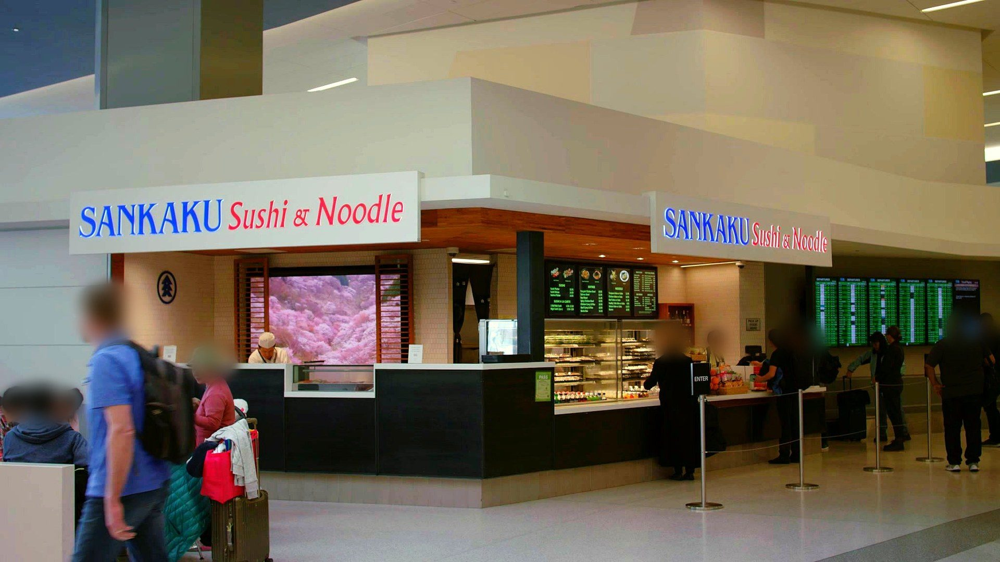
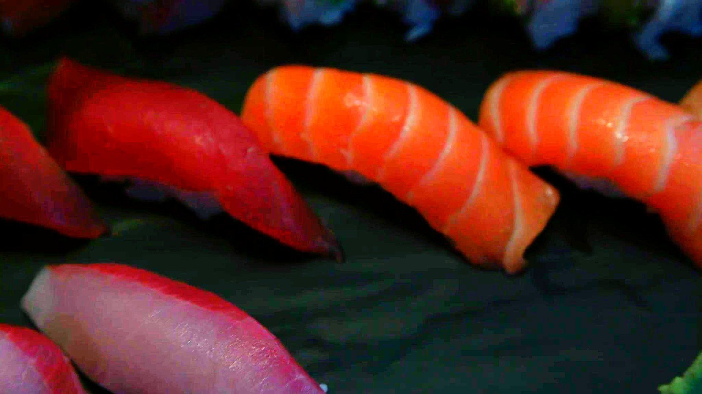
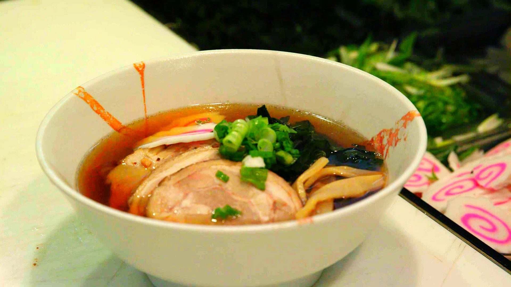
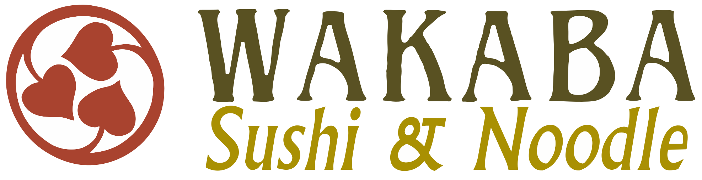

Extra
Our Story
A short film from our family restaurant. The people, the counter and the food behind every plate.

Our Story (sanraku02)▶ 0:00
Video placeholder: sanraku02.mp4. The footage shows our Sanraku restaurant.
A bright, easy stop between flights. Japanese food made with care by a family-run restaurant inside SFO.


Sankaku means “triangle.” Ours has three simple corners: fresh sushi, hot noodles and a little something to sip.

Prices from the 2020 printed menu, to be confirmed. Food footage was shot in our sister restaurant’s kitchen (Wakaba): swap in Sankaku photos when available.

Whether you just landed or you’re about to leave, our counter in Terminal 3 is the easy, tasty pause between flights.

An assortment of our freshest nigiri, built for sharing or for a very good solo layover.

A steaming bowl with noodles, chashu and a swirl of narutomaki. The best way to warm up in the terminal.
 Sankaku at Terminal 3
Sankaku at Terminal 3

 Noodles, hot and fresh
Noodles, hot and fresh“Many visitors to SFO are seeking authentic Japanese food. We are proud to offer the highest quality Japanese food for travelers as they make their way through SFO.”Kimiko Hattori, ownerwith her son Hiroyuki Hattori · quote adapted from flysfo.com, confirm wording and permission
A short film from our family restaurant. The people, the counter and the food behind every plate.
Video placeholder: sanraku02.mp4. The footage shows our Sanraku restaurant.
